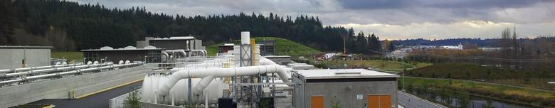
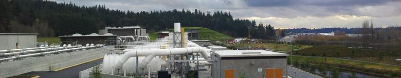

THANKS FOR EVERYONE'S PARTICIPATION
HOPE TO SEE YOU AGAIN NEXT YEAR
Montana Earthship Apprentice Learning Opportunity
Big Sky, Montana | May 5 - June 1, 2013
Earthship Biotecture is looking for apprentices to join the Earthship Crew to build a new Global Model Earthship in Big Sky, Montana.
Learn how to lay out an Earthship, pound tires, install solar glazing, and more! Apprentices work on a voluntary basis and are responsible for their own transportation and lodging.
Montana Earthship Learning Opportunity Dates
Week 1: May 6-10
Week 2: May 13-17
Week 3: May 20-24
Week 4: May 27-31
Here's a page containing links to various Engineering societies. You might find it useful!
http://blog.engineeringstudents.org/?page_id=20
The Puget Sound Engineering Council, who holds the Mentor Night, has a website with information about engineering and other Mentor Nights in other areas. One of the cool features they have is "Ask an Engineer" where anyone can send any question and they will have a real professional engineer to answer the question.
Visit http://pseconline.org/